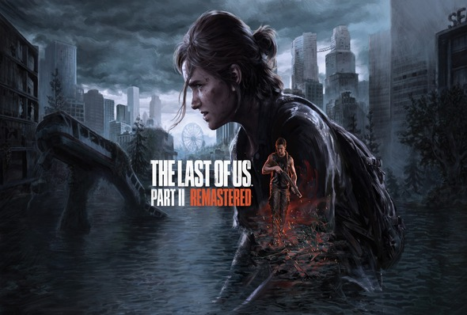
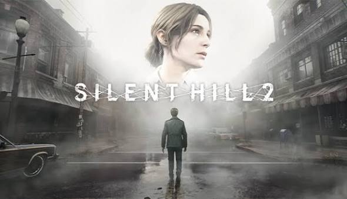
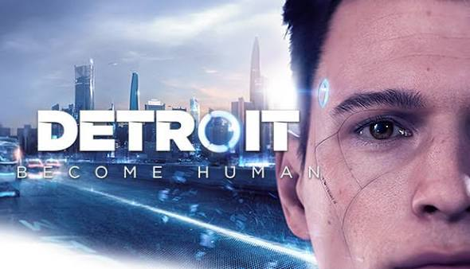
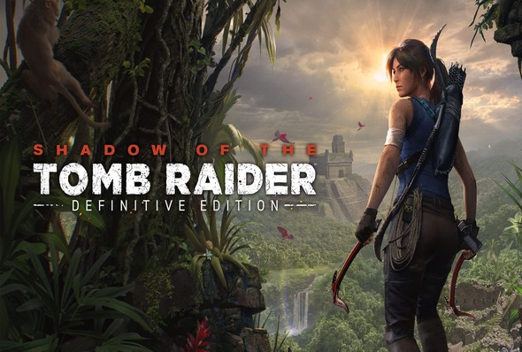
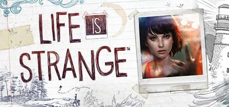

Bem-vindo ao GeekVerse!
O GeekVerse é um espaço dedicado ao universo dos jogos eletrônicos, reunindo informações sobre diferentes games, suas histórias e personagens. O site tem como objetivo apresentar jogos de diversos estilos, compartilhar curiosidades e mostrar como o mundo dos games faz parte do entretenimento e da cultura atual. Aqui, os apaixonados por jogos podem conhecer novas histórias e explorar esse universo.
Conheça os jogosMeus jogos favoritos
The Last of Us 2
Acompanha as consequências brutais da decisão de Joel no final do primeiro jogo, explorando um ciclo destrutivo de luto, obsessão e vingança sob duas perspectivas opostas. A narrativa divide-se entre Ellie e Abby, mostrando como o ódio corrói a humanidade de ambas.

Silent Hill 2
Acompanha James Sunderland após receber uma carta de sua esposa, Mary, pedindo que ele a encontre no "lugar especial" do casal na cidade de Silent Hill — mesmo ela tendo morrido há três anos.

Detroit: Become Human
A história se passa em um futuro próximo na cidade de Detroit, onde androides humanoides fazem parte do cotidiano, mas começam a desenvolver emoções e livre-arbítrio — tornando-se os chamados divergentes.

Shadow of The Tomb Raider
É o terceiro jogo da trilogia de reboot de Tomb Raider, no qual Lara Croft tenta impedir a organização paramilitar Trindade e evitar um apocalipse maia após desencadear, sem querer, uma catástrofe.

Life is Strange
A história acompanha Max Caulfield, uma estudante de fotografia que volta para a cidade fictícia de Arcadia Bay, no Oregon, após cinco anos fora, e descobre o poder de rebobinar o tempo.

Sobre o mundo dos games
O mundo dos jogos eletrônicos (videogames) abrange uma indústria bilionária de entretenimento interativo onde jogadores utilizam dispositivos como controles, teclados ou telas sensíveis ao toque para interagir com softwares em consoles, computadores e celulares. Mais do que um passatempo, o setor evoluiu de experimentos acadêmicos na década de 1950 para uma potência cultural e econômica global.